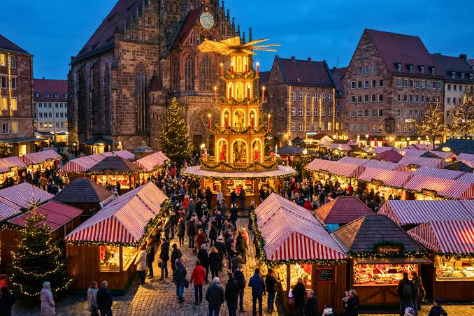

#10 — Nuremberg
📍 Bavaria, Germany | A Classic German Christmas Market

DESCRIPTION
Nuremberg is home to the famous Christkindlesmarkt, a traditional Christmas market in the old town. Visitors can find handmade decorations, gingerbread, and rows of red-and-white market stalls. The historic setting gives the city a warm and memorable Christmas atmosphere.
Things to Do: Try local gingerbread, browse ornaments, and visit the main market square.
Best Time to Visit: Late November through December, when the Christkindlesmarkt operates.
TRAVEL INFORMATION
How to Get There: Arrive at Nuremberg by train or plane and use public transport to the city center.
Travel Highlights: Browse Christkindlesmarkt, try local holiday treats, and explore the old-town squares.
Travel Tips: Bring warm layers and check official market dates before your trip.
Important Note: Market schedules, transportation services, and opening hours may change each year. Check current details before your trip.